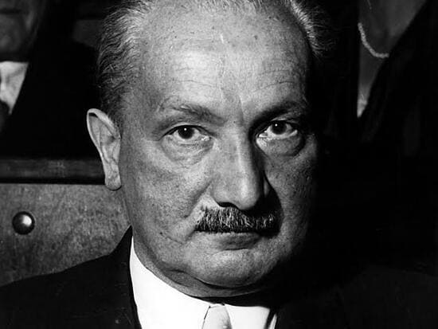
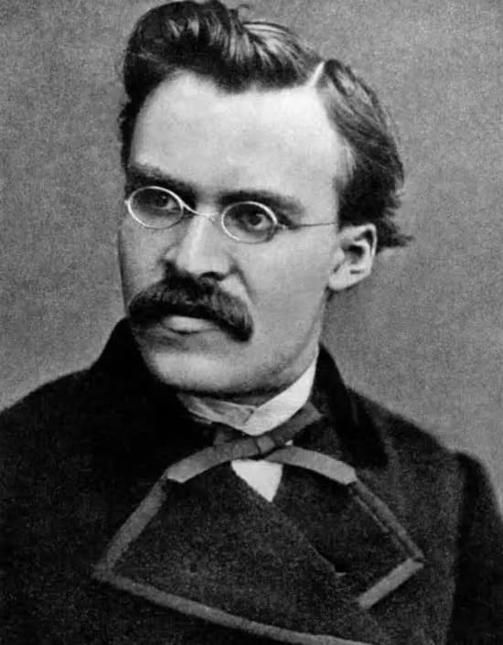
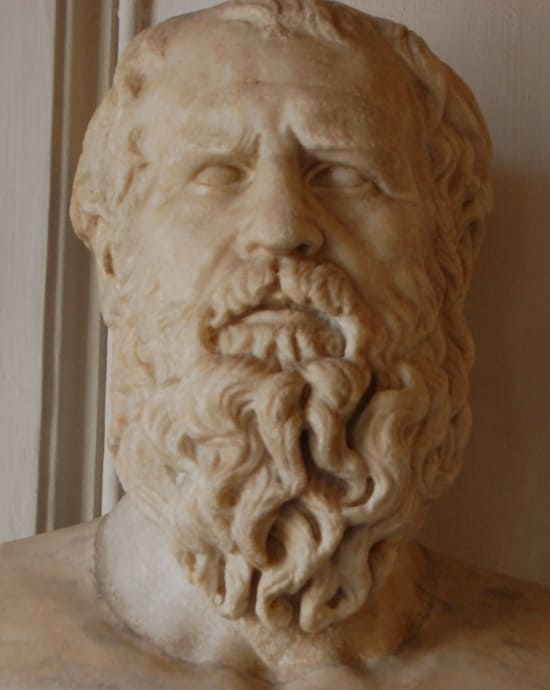
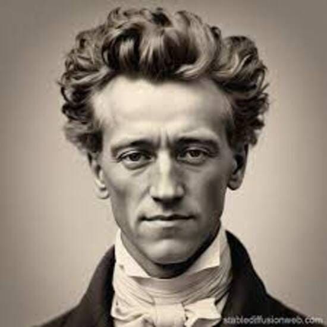
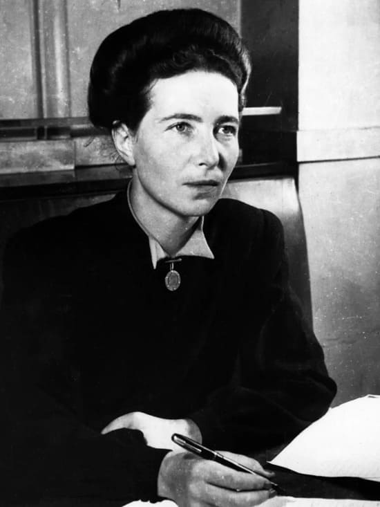
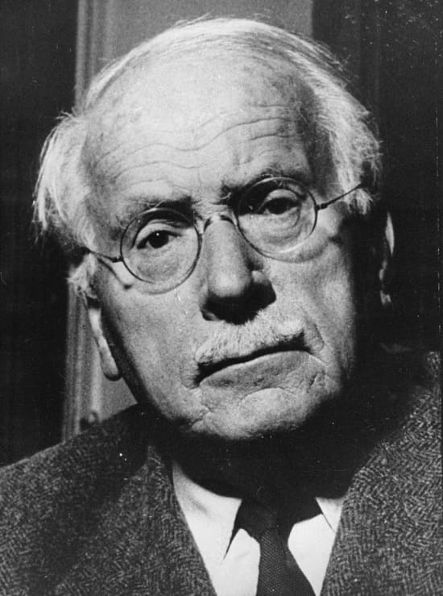
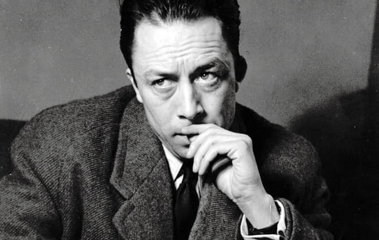
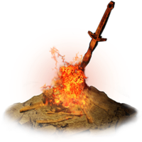

Dark Souls é uma verdadeira tapeçaria filosófica, e suas ideias ecoam pensamentos de diversos filósofos ao longo da história — especialmente aqueles que lidam com temas como morte, repetição, sofrimento, identidade e sentido.







Dark Souls é uma experiência que convida à reflexão profunda. Ele não apenas entretém — ele confronta. E ao fazer isso, se conecta com tradições filosóficas que vão do existencialismo ao estoicismo, da alquimia à fenomenologia.
